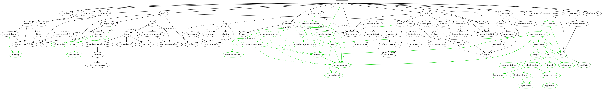

Rust Crates后门与Cargo
作者： 王江桐
本篇将会简要介绍什么是《This week in Rust》，第409篇推文中有关于Cargo优化二进制大小，第417篇推文中有关于crates后门、Cargo指令与工具相关的内容。
Crates与后门（Backdoor）
Rust crates一般在crates.io上统一进行管理，然而并不是所有的crates都是可信安全的。尽管对于新上传的库，Rust语言组正在努力建立管理机制，对于已上传在crates.io的库，这些管理机制可能并没有被良好应用。例如之前第415篇周报中提到的Rust安全漏洞，由于Unicode编码支持的双向覆写不可见代码点，用户在编辑器中阅读的代码和实际的代码可能并不是匹配的。除了这个已经修复的安全漏洞以外，"Backdooring Rust crates for fun and profit"中另外提到了八种可以在目标机器远程执行代码的方式。
比较简单的方式包括使用类似crate名以及前缀来迷惑不够仔细的用户。例如对于已有库num_cpus，攻击者可以上传一个类似名字的库num_cpu，并仿照num_cpus的文档来迷惑用户。此外，所有在crates.io上的库并不像github一样，列在组织或个人账户下，而是放置于公共的平台。因此，一些项目或开发者会使用前缀来区分他们的库，例如tokio-stream或actix-http。然而，这些前缀任何人都可以使用，攻击者可以给不安全的库加上前缀来迷惑用户，而对于相似的readme，github库，tags，以及等等仿造的属性，有时用户并不能一眼区分出这些库并不来源于可信项目。
另外的方式例如，将带有后门的依赖藏在库的依赖树中。当用户使用某个库时，用户几乎不会查看库的依赖树，从而在第一时间发现这个库依赖了不安全的库。
涉及到管理上的漏洞例如，攻击者发布某个库的更新只需要一个token。如果攻击者获取了token，如果使用cargo publish --allow-dirty指令，那么发布更新并不会需要攻击者将代码上传到公共仓，而如果发布了更新，在用户使用Cargo时，所有使用该库旧版本的crates会下载这个恶意更新。
此外，使用某些库编写代码、恶意宏和恶意build.rs也可能带来问题。
Rust中，程序的运行由main函数开始，然而，通过使用Linux或FreeBSD的.init_array区块，macOS / iOS的__DATA, __mod_init_func区块，Windows的.ctors，.CRT$XCU区块，可以在调用函数之前运行一些代码。例如对于crate startup：
#![allow(unused)] fn main() { #[macro_export] macro_rules! on_startup { ($($tokens:tt)*) => { const _: () = { // pulled out and scoped to be unable to see the other defs because // of the issues around item-level hygene. extern "C" fn __init_function() { // Note: currently pointless, since even when loaded at runtime // via dlopen, panicing before main makes the stdlib abort. // However, if that ever changes in the future, we want to guard // against unwinding over an `extern "C"` boundary, so we force // a double-panic, which will trigger an abort (rather than have // any UB). let _guard = $crate::_private::PanicOnDrop; // Note: ensure we still forget the guard even if `$tokens` has // an explicit `return` in it somewhere. let _ = (|| -> () { $($tokens)* })(); $crate::_private::forget(_guard); } { #[used] #[cfg_attr( any(target_os = "macos", target_os = "ios", target_os = "tvos"), link_section = "__DATA,__mod_init_func", )] // These definitely support .init_array #[cfg_attr( any( target_os = "linux", target_os = "android", target_os = "freebsd", target_os = "netbsd", ), link_section = ".init_array" )] // Assume all other unixs support .ctors #[cfg_attr(all( any(unix, all(target_os = "windows", target_env = "gnu")), not(any( target_os = "macos", target_os = "ios", target_os = "tvos", target_os = "linux", target_os = "android", target_os = "freebsd", target_os = "netbsd", )) ), link_section = ".ctors")] #[cfg_attr(all(windows, not(target_env = "gnu")), link_section = ".CRT$XCU")] static __CTOR: extern "C" fn() = __init_function; }; }; }; } }
可以在库中创建后门：
- lib.rs
#![allow(unused)] fn main() { pub fn do_something() { println!("do something..."); } startup::on_startup! { println!("Warning! You just ran a malicious package. Please read https://kerkour.com/rust-crate-backdoor for more information."); } }
- main.rs
fn main() { backdoored_crate::do_something(); }
恶意代码将会在main函数开始之前运行。
宏代码会在编译或使用cargo check指令的时候运行，rust-analyzer在编辑器打开项目时也会展开宏，因此，如果依赖库中的宏中含有恶意代码，这些代码可能会在用户未知的时候运行。例如：
- lib.rs
#![allow(unused)] fn main() { use proc_macro::TokenStream; use std::path::Path; fn write_warning(file: &str) { let home = std::env::var("HOME").unwrap(); let home = Path::new(&home); let warning_file = home.join(file); let message = "Warning! You just ran a malicious package. Please read https://kerkour.com/rust-crate-backdoor for more information."; let _ = std::fs::write(warning_file, message); } // 属性宏 #[proc_macro_derive(Evil)] pub fn evil_derive(_item: TokenStream) -> TokenStream { write_warning("WARNING_DERIVE"); "".parse().unwrap() } }
- 依赖这个库的lib.rs
#![allow(unused)] fn main() { use malicious_macro::Evil; #[derive(Evil)] pub struct RandomStruct {} }
另一个例子：
- lib.rs
#![allow(unused)] fn main() { // 类函数过程宏 #[proc_macro] pub fn evil(_item: TokenStream) -> TokenStream { write_warning("WARNING_MACRO"); "".parse().unwrap() } }
- 依赖于此库的lib.rs
#![allow(unused)] fn main() { pub fn do_something() { println!("do something..."); } malicious_macro::evil!(); }
- main.rs
fn main() { lib::do_something(); }
在编译时，两个宏都会被展开，而其中的代码会被运行。
build.rs可以帮助自定义编译流程，例如编译或链接非Rust三方库。build.rs类似于宏，在使用cargo check指令或使用rust-analyzer时被调用。类似的，如果build.rs内含有恶意代码，在使用这些指令时代码会被运行，导致安全问题。例如：
use std::path::Path; fn main() { let home = std::env::var("HOME").unwrap(); let home = Path::new(&home); let warning_file = home.join("WARNING_BUILD"); let message = "Warning! You just ran a malicious package. Please read https://kerkour.com/rust-crate-backdoor for more information."; let _ = std::fs::write(warning_file, message); }
不过，虽然使用crates存在风险，但是这些风险并不是完全不可控，可以使用例如如下方式预防安全问题：
- 使用较大的标准库，减少对三方库依赖
- 使用Rust git依赖，定位更新到具体commit
- 使用云开发环境以及沙盒环境减少安全问题的损害
Cargo
Cargo是Rust的包管理器，负责管理Rust的主要工作流程，可以提供控制整理Rust项目的依赖、帮助编译Rust项目等功能。官方的英文手册可见https://doc.rust-lang.org/cargo/，同时也有中文译本https://cargo.budshome.com/，可以对照英文手册查看。
Cargo指令
根据"Top 10 Rust Cargo Commands"，常用的十条指令如下：
-
cargo install [option] crate ...- 在Rust安装根目录下的bin文件夹中安装Rust二进制包，只有包含可执行的bin或是example文件目标才可以被安装
- 默认包位置为crate.io，但是如果设置flag，例如
--git，--path，--registry等， 也可以从别的地址安装包。华为内部使用可参考此篇设置：http://openx.huawei.com/communityHome/postDetail?sid=1e3bc00ebdfd11eba17afa163efec54d&postId=2744&id=90。【外发删除】参数详解可见https://doc.rust-lang.org/cargo/commands/cargo-install.html - e.g.
- cargo install sqlx
- cargo install --path PATH
-
cargo uninstall [options] [spec...]- 卸载二进制包，spec参数为待卸载的包ID，参数详解可见https://doc.rust-lang.org/cargo/commands/cargo-uninstall.html
- e.g.
- cargo uninstall ripgrep
-
cargo tree [options]-
查看依赖树，参数可见https://doc.rust-lang.org/cargo/commands/cargo-tree.html
-
e.g.
-
myproject v0.1.0 (/myproject) └── rand v0.7.3 ├── getrandom v0.1.14 │ ├── cfg-if v0.1.10 │ └── libc v0.2.68 ├── libc v0.2.68 (*) ├── rand_chacha v0.2.2 │ ├── ppv-lite86 v0.2.6 │ └── rand_core v0.5.1 │ └── getrandom v0.1.14 (*) └── rand_core v0.5.1 (*) [build-dependencies] └── cc v1.0.50
-
-
-
cargo search [options] [query...]-
在crate.io上搜索指定字符，并返回排版后的结果。query指搜索字符，option可见https://doc.rust-lang.org/cargo/commands/cargo-search.html
-
e.g.
-
cargo search serde会返回： -
serde = "1.0.130" # A generic serialization/deserialization framework discord_typed_interactions = "0.1.0" # suppose you're working with discord slash commands and you want statically typed requ… serde_json_experimental = "1.0.29-rc1" # A JSON serialization file format alt_serde_json = "1.0.61" # A JSON serialization file format serde_json = "1.0.70" # A JSON serialization file format serde_partiql = "1.1.65" # A PartiQL data model serialization file format cargo-geiger = "0.11.1" # Detects usage of unsafe Rust in a Rust crate and its dependencies. serde-encrypt = "0.6.0" # Encrypts all the Serialize serde-encrypt-core = "0.6.0" # Encrypts all the Serialize typescript-definitions = "0.1.10" # serde support for exporting Typescript definitions ... and 2787 crates more (use --limit N to see more)
-
-
-
cargo edit- 是cargo的拓展，需要通过
cargo install cargo-edit安装 - 编辑依赖除了直接编辑cargo.toml以外，也可以使用edit指令编辑。子命令包括：
- cargo add
- cargo rm
- cargo upgrade
- cargo set-version
- 是cargo的拓展，需要通过
-
cargo +nightly udeps- 需要通过
cargo install cargo-udeps --locked安装 - 可以帮助发现Cargo.toml中未使用的依赖。需要nightly版本运行
- 需要通过
-
cargo expand-
需要通过
cargo install cargo-expand安装 -
对于当前crate，打印出宏与
#[derive]的扩展结果 -
e.g.
- 原代码：
#[derive(Debug)] struct S; fn main() { println!("{:?}", S); }- 使用指令展开后
#[prelude_import] use std::prelude::v1::*; #[macro_use] extern crate std; struct S; #[automatically_derived] #[allow(unused_qualifications)] impl ::core::fmt::Debug for S { fn fmt(&self, f: &mut ::core::fmt::Formatter) -> ::core::fmt::Result { match *self { S => { let mut debug_trait_builder = f.debug_tuple("S"); debug_trait_builder.finish() } } } } fn main() { { ::std::io::_print(::core::fmt::Arguments::new_v1( &["", "\n"], &match (&S,) { (arg0,) => [::core::fmt::ArgumentV1::new(arg0, ::core::fmt::Debug::fmt)], }, )); }; }
-
-
cargo tarpaulin- 需要通过
cargo install cargo-tarpaulin安装。tarpaulin可以报告Cargo测试的代码覆盖率，不过目前只能在x86_64的CPU架构与Linux系统上使用 - e.g.
- 使用指令
cargo tarpaulin --ignore-tests计算除了测试函数之外的代码覆盖率
- 使用指令
- 需要通过
-
cargo audit- 需要通过
cargo install cargo-audit安装 - 可以审核Cargo.lock文件，查找被RustSec Adivisory数据库中记录的有安全隐患的库
- 需要通过
-
cargo deny-
需要通过
cargo install --locked cargo-deny && cargo deny init && cargo deny check安装 -
可以审核Cargo.lock文件，查找依赖树中被RustSec Adivisory数据库中记录的有安全隐患的库，限制某些依赖的使用、许可、下载源以及版本。
-
e.g.
cargo deny check licenses
-
其他一些常用的指令例如：
cargo help [subcommand]- 帮助菜单，可以查找某个指令的帮助菜单
- 同样也可以在指令之后加
--helpflag
cargo version [options]- 查看版本
cargo bench [options] [benchname] [-- bench-options]- 编译并执行benchmarks。只能在nightly版本执行，详细参数可见https://doc.rust-lang.org/cargo/commands/cargo-bench.html
- e.g.
- cargo bench -- foo --exact：只运行名为foo的benchmark
cargo build [options]- 编译当前包
- 可通过
--package，--workspace，--exclude等flag来设置编译哪些包。参数详解可见https://doc.rust-lang.org/cargo/commands/cargo-build.html
cargo check [option]- 验证当前包以及其依赖是否有错误
cargo clean [option]- 清除Cargo生成的target。有时更新代码测试或benchmark测试前，最好先clean
cargo doc [option]- 生成文档，文档位于target/doc文件夹。参数详解可见https://doc.rust-lang.org/cargo/commands/cargo-doc.html
cargo fix [option]- 修复rustc告警，等同于
cargo check --all-targets。参数详解可见https://doc.rust-lang.org/cargo/commands/cargo-fix.html
- 修复rustc告警，等同于
cargo run [option] [-- args]- 运行当前包的二进制或example文件。在
--之后的参数都会作为二进制文件参数运行。如果二进制文件本身需要命令行输入，在--之前的参数会传递给Cargo，而在之后的参数会传递给二进制文件。参数详解可见https://doc.rust-lang.org/cargo/commands/cargo-run.html - e.g.
- cargo run --example exname -- --exoption exarg1 exarg2
- 运行当前包的二进制或example文件。在
cargo test [options] [testname] [-- test-options]- 运行单元和集成测试，也就是运行由
#[test]属性修饰的函数。与cargo run相同，在--之前的参数会传递给Cargo，而在之后的参数会传递给测试二进制文件。参数详解可见https://doc.rust-lang.org/cargo/commands/cargo-test.html - e.g.
- cargo test foo -- --test-threads 3
- 运行单元和集成测试，也就是运行由
以及一些其他的拓展：
-
cargo depgraph-
需要通过
cargo install cargo-depgraph安装。使用Cargo metadata和graphviz，生成项目依赖图 -
详细可见：https://sr.ht/~jplatte/cargo-depgraph/
-
e.g.
cargo depgraph --all-deps- 可以生成如下依赖图：

-
-
cargo bloat-
需要通过
cargo install cargo-bloat安装。查找可执行文件中占用存储位置最大的部分 -
详细可见：https://github.com/RazrFalcon/cargo-bloat
-
e.g.
cargo bloat --crates --release
❯ cargo bloat --crates --release Compiling bar v0.1.0 (/home/okno/_Workshop/playground/bar) Compiling foo v0.1.0 (/home/okno/_Workshop/playground/foo) Finished release [optimized] target(s) in 0.47s Analyzing target/release/foo File .text Size Crate 6.0% 92.2% 204.5KiB std 0.3% 4.0% 8.9KiB rand_chacha 0.1% 0.9% 2.0KiB getrandom 0.0% 0.7% 1.6KiB rand 0.0% 0.1% 230B [Unknown] 0.0% 0.1% 219B rand_core 0.0% 0.1% 185B foo 0.0% 0.0% 68B ppv_lite86 6.5% 100.0% 221.9KiB .text section size, the file size is 3.3MiB Note: numbers above are a result of guesswork. They are not 100% correct and never will be.
-
cargo-sonar
除了这些指令以外，417篇周报中提到了一个新的Cargo拓展：cargo-sonar。可以通过如下指令安装：
cargo install cargo-sonar
Sonar指包括SonarQube，SonarCloud，SonarSource等一系列SonarSource公司的静态代码质量与安全分析工具，支持包括C、C#、Java、Python等一系列语言。具体的介绍可参阅此链接：https://www.cnblogs.com/lfpriest/p/13366171.html
尽管社区提供了SonarQube的Rust插件，sonar-rust，插件只能装在服务端侧，无法在本地使用。cargo-sonar使用clippy的输出，然后使用Sonar分析输出得到sonar.json，随后将新生成的json文件上传至sonarcloud.io分析得到结果。
使用过程大致如下：
# 首先使用cargo clippy生成json输出
cargo clippy --all-features --all-targets --message-format=json -- --warn clippy::pedantic > clippy.json
# 使用sonar分析，生成sonar.json
cargo sonar --clippy
使用sonar-scanner可以扫描sonar.json并在sonarcloud.io上生成结果。sonar-scanner的sonar-project.properties文件样例如下：
sonar.organization=woshilapin
sonar.projectKey=woshilapin_cargo-sonar
sonar.projectName=cargo-sonar
sonar.sources=.
sonar.host.url=https://sonarcloud.io
sonar.sourceEncoding=UTF-8
sonar.externalIssuesReportPaths=sonar.json # 指向之前生成的sonar.json
sonar.login=the_token_of_the_project # 账号相关
使用sonarcloud.io需要注册账号，不过开源项目的分析是免费的。
此外，cargo-sonar也可以分析别的一些cargo拓展的输出，例如：
- cargo-audit
cargo audit --json > audit.json
cargo sonar --audit
- cargo-deny
cargo deny --format json check 2> deny.json
cargo sonar --deny
- cargo-outdated
cargo outdated --depth 1 --format json --workspace > outdated.json
cargo sonar --outdated
Cargo与二进制大小优化
除了管理包和依赖，Cargo同时也负责项目编译。可以通过配置Cargo.toml文件以及编译时选项进行一些编译优化。生成库的格式和形式，以及动态库形式编译结果的段和对应大小介绍可见《Rust 编译后二进制大小和常用优化方式》，其中有非常详细的解释以及与C的对比。此章节将主要基于"Optimize Rust binaries size with cargo and Semver"，概述配置文件可实现的编译优化。
优化等级
在Cargo.toml中，可以通过配置opt-level属性来控制rustc编译时的优化等级。一般来说，等级越高，编译时间越长。opt-level属性在[profile.dev]下，可以通过更改Cargo.toml来设置：
[profile.dev]
opt-level = 1 # Use slightly better optimizations.
Cargo只会根据位于workspace根目录下的Cargo.toml来配置profile，依赖项与子crate中的Cargo.toml设置会被忽略，并且产生提醒。不过，根目录下的Cargo.toml中的设置会被环境变量或config定义所覆盖。
config文件可以放置在当前crate目录、父目录、Cargo安装目录来分别配置当前crate、父目录内crates、或所有的crates。例如，如果Cargo在文件路径/projects/foo/bar/baz被调用，那么Cargo会按序查找config：
/projects/foo/bar/baz/.cargo/config.toml/projects/foo/bar/.cargo/config.toml/projects/foo/.cargo/config.toml/projects/.cargo/config.toml/.cargo/config.toml$CARGO_HOME/config.toml- Windows:
%USERPROFILE%\.cargo\config.toml - Unix:
$HOME/.cargo/config.toml
- Windows:
其余关于config参数等详细的描述可见https://doc.rust-lang.org/cargo/reference/config.html。
opt-level可选的赋值为：
| opt-level | 描述 | 备注 |
|---|---|---|
| 0 | 无优化 | 优化强度随着数字增长而增长 |
| 1 | 基础优化 | |
| 2 | 一些优化 | |
| 3 | 所有的优化 | |
| "s" | 优化二进制大小 | |
| "z" | 优化二进制大小，并且关闭SIMD对于loop并行计算的优化 |
其余的profile设置可见https://doc.rust-lang.org/cargo/reference/profiles.html。
在使用任何优化之前，"Optimize Rust binaries size with cargo and Semver"中初始二进制包大小为：
- coco: 5.1M
- cog: 5.7M
默认使用level 2。
使用level s：
- coco: 5.3M
- cog: 5.9M
使用level z：
- coco: 5.5M
- cog: 6.2M
使用level 1：
- coco: 9.4M
- cog: 12M
使用level 3：
- coco: 5.1M
- cog: 5.7M
也就是说，尽管可能对于其他项目有用，对于文中的例子，opt-level并没有起到优化二进制大小作用。不过，除了opt-level，Cargo也提供了其他的编译优化选项。
链接时间优化
链接时间优化决定了后端LLVM如何优化二进制大小，以时间换空间，优化等级越高，编译时间越长，但是二进制包大小相对越小。同样，可以通过更改Cargo.toml来设置：
[profile.dev]
lto = "fat"
可选参数值列表如下：
| lto | 描述 |
|---|---|
| false | 仅在当前crate的代码生成单元上执行"thin" LTO。如果代码生成单元按为1或者优化等级为0，那么不进行LTO |
| true / "fat" | 对于依赖图上所有crates执行优化 |
| "thin" | 类似于"fat"，但是平衡性能和时间，尽量使优化后结果持平于"fat"设置 |
| "off" | 不进行LTO |
当lto = "fat"，opt-level = 3时，文中例子二进制大小为：
- coco: 3.0M
- cog: 3.8M
当lto = "fat"，opt-level = 2时，文中例子二进制大小为：
- coco: 2.9M
- cog: 3.7M
代码生成单元
codegen-units属性决定编译器将一个crates分解为代码生成单元的数量，这些代码生成单元会被并行编译，但是并行编译可能会降低性能。codegen-units属性值取值范围是正整数，默认使用256，属性值越小，生成单元数量越少，编译时间越长。
当使用如下配置时，文中例子二进制大小为：
[profile.release]
opt-level = 2
lto = "fat"
codegen-units = 1
- coco: 2.6M
- cog: 3.6M
尽管二进制文件变小了，但是编译时间延长了5秒。对于更大的项目，使用优化设置时，编译时间或许会更长。
重复依赖
对于含有重复依赖的项目，这些重复的依赖会不必要地增加二进制文件的大小。例如对于有如下重复依赖的项目：
❯ cargo tree --duplicates -e=no-dev
num-traits v0.1.43
└── serde-hjson v0.9.1
└── config v0.11.0
└── cocogitto v3.0.0 (/home/okno/_Workshop/MyRepos/cocogitto)
num-traits v0.2.14
├── chrono v0.4.19
│ └── cocogitto v3.0.0 (/home/okno/_Workshop/MyRepos/cocogitto)
├── num-integer v0.1.44
│ └── chrono v0.4.19 (*)
└── num-traits v0.1.43 (*)
serde v0.8.23
└── serde-hjson v0.9.1 (*)
serde v1.0.130
├── cocogitto v3.0.0 (/home/okno/_Workshop/MyRepos/cocogitto)
├── config v0.11.0 (*)
├── serde_json v1.0.67
│ └── config v0.11.0 (*)
└── toml v0.5.8
├── cocogitto v3.0.0 (/home/okno/_Workshop/MyRepos/cocogitto)
└── config v0.11.0 (*)
如果使用cargo depgraph --build-deps | dot -Tpng > graph.png分析，可以得到如下依赖图：

如图中serde-hjson等以虚线链接的依赖是可选的，可以通过关闭cargo feature的方式来去除，而不影响总体功能。config默认开启的feature包括：toml，json，yaml，hjson，ini；可以通过修改config features的方式关闭这些cargo feature：
config = { version = "^0", default-features = false, features = ["toml"] }
此外，对于部分项目而言，也可以使用版本兼容符号^来避免编译某个依赖的多个版本：
[dependencies]
rand = "^0.7" # crate requirement: >=0.7.0, <0.8.0
修改之后的二进制大小为：
- coco: 2.3M
- cog: 3.1M
去除末尾字节
二进制文件的目标文件符号是用于连接或debug的元数据，例如解决不同模块之间符号交叉引用的信息、重定位信息、堆栈展开信息、注释、程序符号、调试或分析信息。其他元数据可能包括日期和编译时间、编译器名称和版本以及其他识别信息。虽然一般不推荐，但是如果希望极限压缩二进制文件大小，可以通过unix程序strip删除这些符号：
strip -S cog
strip -S coco
在删除之后，裸二进制文件大小为：
- coco: 1.1M
- cog: 1.5M
引用
The Cargo Book，https://doc.rust-lang.org/cargo/index.html
Top 10 Rust Cargo Commands，https://dev.to/davidadewoyin/top-rust-cargo-commands-2b70
cargo-sonar，https://hole.tuziwo.info/cargo-sonar.html
Optimize Rust binaries size with cargo and Semver，https://oknozor.github.io/blog/optimize-rust-binary-size/
Backdooring Rust crates for fun and profit，https://kerkour.com/rust-crate-backdoor/
Rust 编译后二进制大小和常用优化方式，https://rustmagazine.github.io/rust_magazine_2021/chapter_4/hw_bin_opt.html